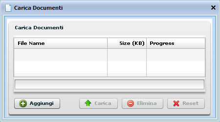
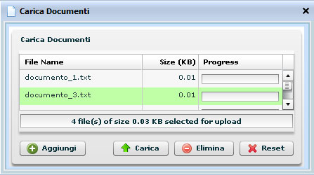

Per aggiungere un documento ad una Cartella bisogna selezionare la Cartella e cliccare
sull'icona 
Comparirà la seguente popup

Cliccare sul tasto
e procedere con la scelta di uno o più documenti da caricare
dal proprio pc.

I file verranno visualizzati nella popup ma non ancora caricati.
Si potrà visualizzare la correttezza della scelta e procedere con le azioni successive:
Carica:
Cliccando sul tasto  tutti i documenti che si visualizzano verranno caricati
tutti i documenti che si visualizzano verranno caricati
Elimina:
Cliccando su uno dei file visualizzati la riga diventa di colore verde Cliccando sul tasto
si procede con la singola cancellazione del
documento
Reset:
Cliccando sul tasto si procede con l'eliminazione totale dei documenti che si
visualizzano